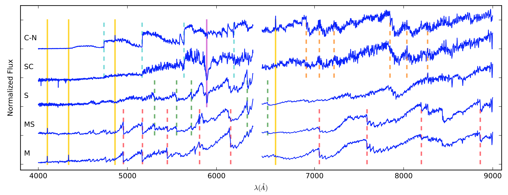
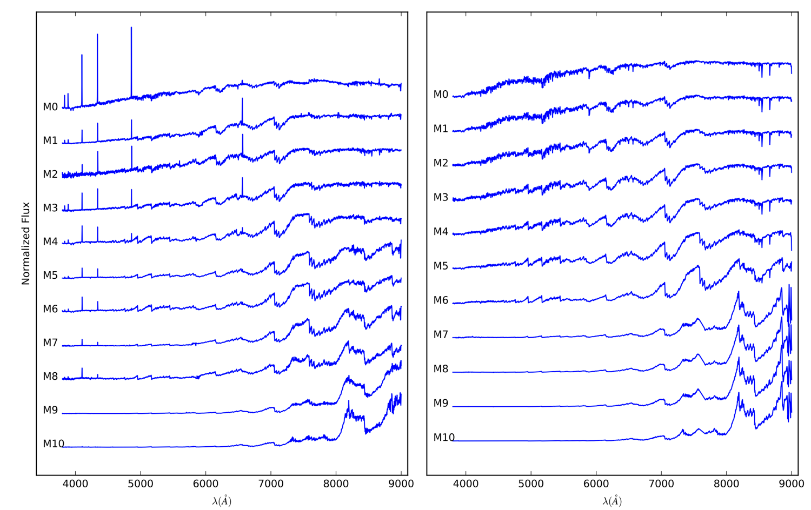
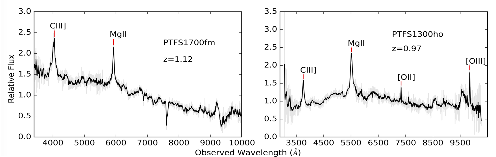
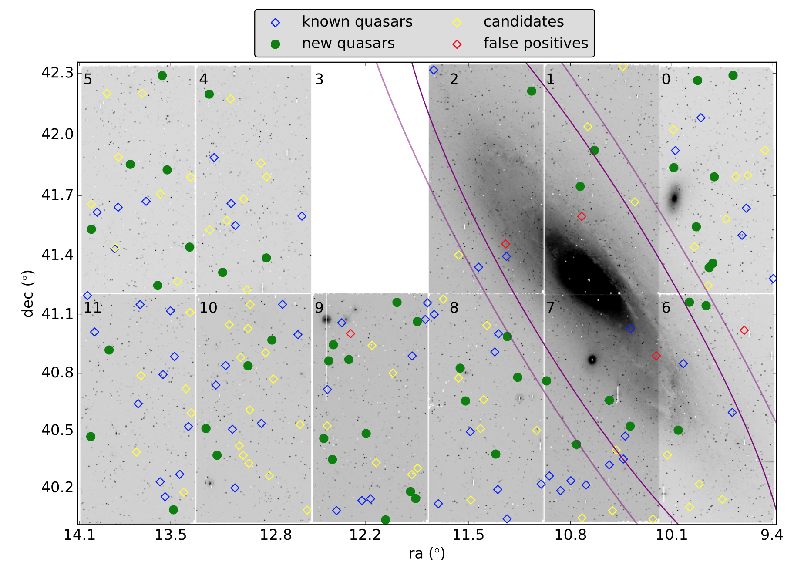

Research
-- What language is thy answer, O sky?
-- The language of eternal silence.
Mira variables from LAMOST spectroscopic survey
Mira stars are a class of long period variables with periods in excess of 80 days that coincide with the final stellar evolutionary phase of low- to intermediate-mass (1–8 M⊙) stars before the envelope ejection phase. Because they are visible beyond the Local Group, and their distances can be roughly determined by their period-luminosity relationship, Miras have long been used as tracers of many astrophysical problems. For example, the picture of their chemical composition and spatial distribution can help to probe the structure and evolution of the Milky Way Galaxy (MWG). Therefore, the more Miras we know, the better we understand the MWG.
Traditionally, the search of Mira stars involves long-term IR photometry followed by carefully planned spectroscopic observations. Thanks to LAMOST, we now have a chance to search for Miras based on their spectral characteristics. Different from normal giant stars, the spectra of Mira stars have high-excitation emission lines of hydrogen and some metal elements. By measuring the intensity of emission lines, absorption bands, and using the archival near-infrared photometric data (2MASS), we have found 191 new Mira candidates from millions of spectra in the LAMOST DR4 catalogue. Photometric follow-ups are needed to confirm that these candidates are bona fide Mira stars.
In addition, we compiled a sample of 281 spectra of known Mira stars, including 12 early-type Miras that previously had not been carefully studied because of their rareness. After comparison and quantification, they found a relationship between relative Balmer emission-line strength and spectral temperature of O-rich Mira stars. The relative flux of higher orders in the Balmer series (Hdelta) increases as stars cool down from M0 to M10, which is likely driven by increasing TiO absorption above the deepest shock-emitting regions.

The M -- MS -- S -- SC -- C spectral sequence of LAMOST Mira spectra.

Left: LAMOST spectra of O-rich Mira stars, with decreasing temperature from M0 to M10. Right: template spectra of normal M giants from Zhong et al. (2015) and Fluks et al. (1994).
Searching for quasars behind the Andromeda Galaxy with PTF
Quasars are energetic supermassive black holes in the centers of distant galaxies. By accreting gas from the host galaxy, a quasar gives off huge amounts of energy, and is hundreds times brighter than the sum of all stars in the galaxy. The Andromeda Galaxy, also known as M31, is the nearest large spiral galaxy to the Milky Way, and as such has been an ideal laboratory to investigate many astronomical problems. Quasars behind M31 are difficult to be identified because of the high stellar surface densityn, yet they are powerful beacons to probe the interstellar medium (ISM) of M31 via metal absorption line systems in their spectra.
Our goal is to find quasars within and in the close outskirts of M31 with optical variability data from the Palomar Transient Factory (PTF) survey. We characterize the photometric data by extracting 40 parameters for each light curve, including 34 variability features and 6 color features. Based on Machine Learning (ML) algorithms, we used 59 known quasars and 500 known stars as a training set to build our “star-quasar” separation filter, which selected 120 quasar candidates. We obtained spectra for 54 candidates using the Palomar 5-m and Keck 10-m telescopes, and 49 of them were confirmed to be bona fide quasars, including 5 in the most challenging central 2.2 square degree region around M31. This is an improvement compared with previous results (true positive rate≈8%), and suggests that about 90% of the remaining 66 candidates are likely real quasars.
We consider our result, derived from an inquiry of PTF M31 time-domain dataset, as a preliminary study of quasars with the the Zwicky Transient Facility (ZTF, Kulkarni, Shrinivas R. 2016) or future synoptic surveys.

Quasar spectra from DBSP mounted on Palomar 5-m and LRIS mounted on the Keck 10-m telescope.

Evolution of Circumstellar Disks Around Young Stars as a Function of Stellar Mass
In progress...